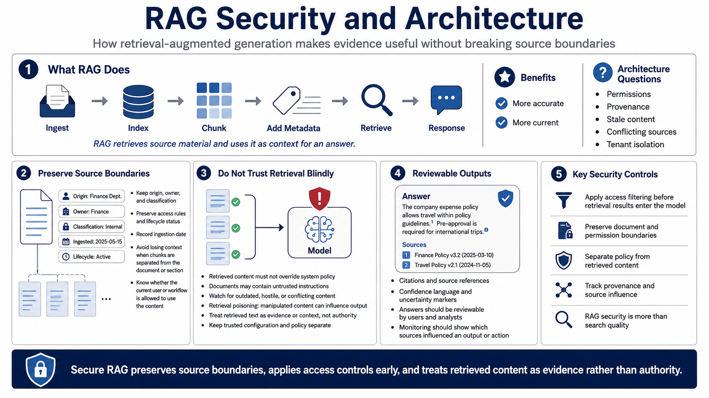

Retrieval, RAG, and Knowledge Source Security
Connecting to LMS... Progress: in progress

Narration
Retrieval-augmented generation, or RAG, lets an AI application retrieve source material and use it as context for a response. At a high level, source content is ingested, indexed, chunked, enriched with metadata, and retrieved when relevant to a user request. RAG can make AI systems more accurate and current, but it also introduces new architecture questions around document permissions, provenance, stale content, conflicting sources, and tenant isolation.
Source ingestion should preserve boundaries. Documents should retain metadata about origin, owner, classification, access rules, ingestion date, and lifecycle status. Chunking concepts matter because a retrieved fragment may lose context if it is separated from its document, section, or permission model. The system should know where content came from and whether the current user or workflow is allowed to use it.
Retrieved content should not override system policy or permissions. A document may contain untrusted instructions, outdated guidance, hostile content, or conflicting information. Retrieval poisoning at a high level describes the risk that untrusted or manipulated content influences model output. Architecture controls should treat retrieved text as evidence or context, not as authority. Trusted configuration and policy should remain separate.
Good RAG outputs are reviewable. Citations, source references, confidence language, and uncertainty markers help users and reviewers evaluate an answer. Access filtering should happen before retrieval results enter the model. Monitoring should show which sources influenced an output or action. RAG security is not only about better search; it is about preserving source boundaries while making evidence useful.